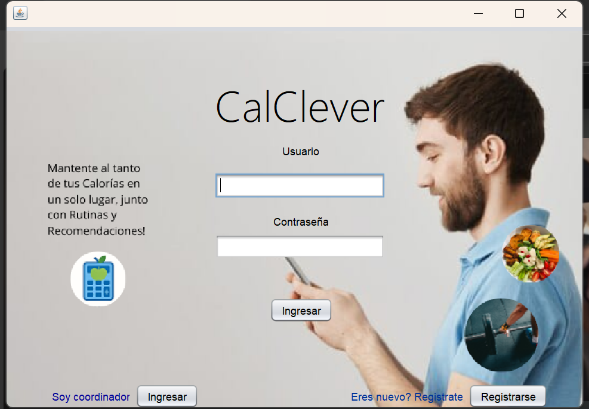
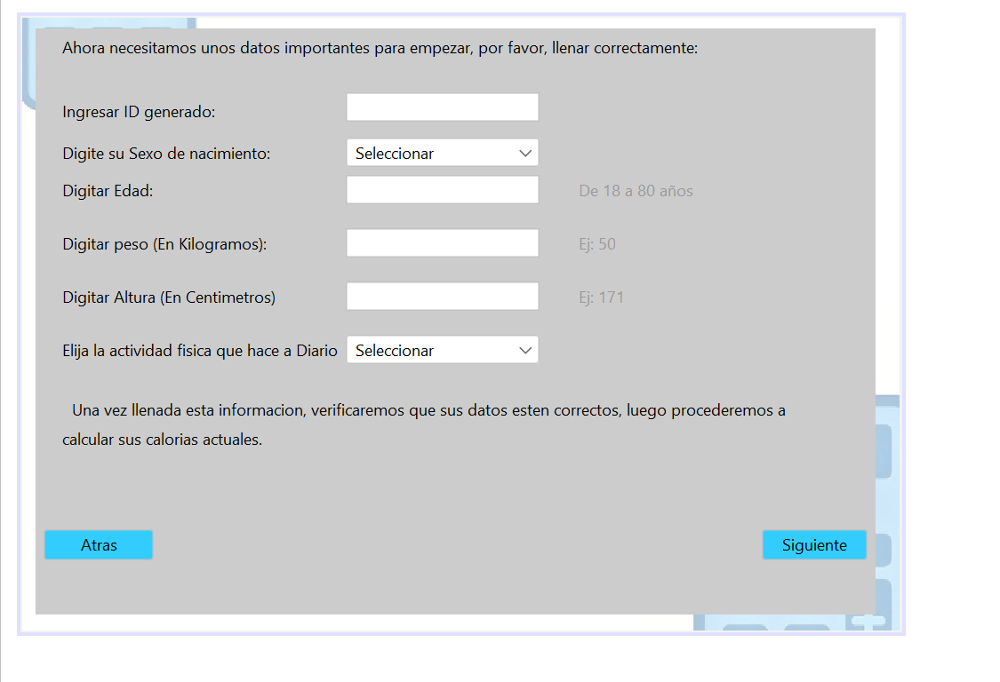

¿En que se basa nuestro proyecto?
Este proyecto tiene como finalidad el desarrollo de una calculadora calórica personalizada que permita a los usuarios gestionar su ingesta diaria de calorías. La herramienta clasificará el peso corporal en categorías (bajo, normal, sobrepeso y obesidad) y ajustará las recomendaciones de acuerdo con el nivel de actividad física de cada persona (sedentario, moderado o activo).

Fundamentacion utilizada
El proyecto se fundamenta en principios científicos como el balance energético y el metabolismo basal, apoyándose en conceptos como: Calorías: energía que aportan los alimentos al cuerpo. Índice de Masa Corporal (IMC): parámetro para clasificar el estado físico. Actividad física: factor clave que influye en el gasto energético y en las necesidades calóricas diarias. La aplicación permitirá calcular de forma personalizada las calorías requeridas, evaluar el IMC y dar recomendaciones adaptadas a cada usuario, fomentando la educación nutricional y la conciencia sobre el autocuidado de la salud.

Servicios del sistema
Para llevar a cabo este proyecto, el sistema ofrecerá: Cálculo de necesidades calóricas personalizadas según datos ingresados (peso, edad, sexo, altura, actividad física). Clasificación del estado físico mediante el cálculo del IMC. Recomendaciones personalizadas de acuerdo con el nivel de actividad física. Seguimiento de resultados que permita observar cambios y progresos. Accesibilidad y facilidad de uso, desarrollándose como una aplicación académica con interfaz intuitiva. El proyecto será implementado siguiendo una metodología de análisis, diseño y programación, validando su utilidad con pruebas y retroalimentación de usuarios, para asegurar que cumpla con los objetivos planteados.

Objetivos
Objetivo 1
Identificar las dificultades que presentan las personas con su ingesta diaria.
Objetivo 2
Desarrollar una solución en base a los datos recolectados por medio de un software especializado.
Objetivo 3
Implementar la utilidad del software y concientizar sobre la importancia de la ingesta calórica diaria.
Avances del proyecto
Muestra 1
Muestra 2
Integrantes
Este proyecto sera llevado a cabo por:
Georsa Milena Diaz
Yorleidis Angulo
Angye Paola Sandoval
Marianela Diaz